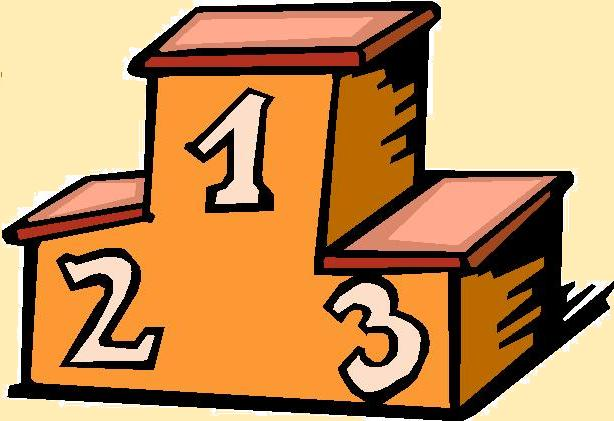

Výsledky

Tu nájdete všetky výsledky v tabuľkách jednotlivcov. Výsledky sú spracované každým týždňom a doplňované o nové. Tieto výsledky tiež môžte nájsť aj na káblovom televíznom programe "Antechnet Channel". Tabuľký sú robené v programoch excel alebo word. Ak sa chceš pozrieť aké výsledky dosahuješ alebo chceš si pozrieť svoj nádskok pred ostatnými tak neváhaj a pozri ako na tom si !!!
| Liga číslo : | Súbor na stiahnutie | Liga číslo : | Súbor na stiahnutie |
|---|---|---|---|
| Výsledok Mestskej Ligy v biliarde po 15.kole | 15 kolo ligy | Výsledok Mestskej Ligy v biliarde po 30.kole | 30 kolo ligy |
| Výsledok Mestskej Ligy v biliarde po 16.kole | 16 kolo ligy | Výsledok Mestskej Ligy v biliarde po 31.kole | 31 kolo ligy |
| Výsledok Mestskej Ligy v biliarde po 17.kole | 17 kolo ligy | Výsledok Mestskej Ligy v biliarde po 32.kole | 32 kolo ligy |
| Výsledok Mestskej Ligy v biliarde po 18.kole | 18 kolo ligy | Výsledok Mestskej Ligy v biliarde po 33.kole | 33 kolo ligy |
| Výsledok Mestskej Ligy v biliarde po 19.kole | 19 kolo ligy | Výsledok Mestskej Ligy v biliarde po 34.kole | 34 kolo ligy |
| Výsledok Mestskej Ligy v biliarde po 20.kole | 20 kolo ligy | Výsledok Mestskej Ligy v biliarde po 35.kole | 35 kolo ligy |
| Výsledok Mestskej Ligy v biliarde po 21.kole | 21 kolo ligy | Výsledok Mestskej Ligy v biliarde po 36.kole | 36 kolo ligy |
| Výsledok Mestskej Ligy v biliarde po 22.kole | 22 kolo ligy | Výsledok Mestskej Ligy v biliarde po 37.kole | 37 kolo ligy |
| Výsledok Mestskej Ligy v biliarde po 23.kole | 23 kolo ligy | Výsledok Mestskej Ligy v biliarde po 38.kole | 38 kolo ligy |
| Výsledok Mestskej Ligy v biliarde po 24.kole | 24 kolo ligy | Výsledok Mestskej Ligy v biliarde po 39.kole | 39 kolo ligy |
| Výsledok Mestskej Ligy v biliarde po 25.kole | 25 kolo ligy | Výsledok Mestskej Ligy v biliarde po 40.kole | 40 kolo ligy |
| Výsledok Mestskej Ligy v biliarde po 26.kole | 26 kolo ligy | Výsledok Mestskej Ligy v biliarde po 41.kole | 41 kolo ligy |
| Výsledok Mestskej Ligy v biliarde po 27.kole | 27 kolo ligy | Výsledok Mestskej Ligy v biliarde po 42.kole | 42 kolo ligy |
| Výsledok Mestskej Ligy v biliarde po 28.kole | 28 kolo ligy | Výsledok Mestskej Ligy v biliarde po 43.kole | 43 kolo ligy |
| Výsledok Mestskej Ligy v biliarde po 29.kole | 29 kolo ligy | Výsledok Mestskej Ligy v biliarde po 44.kole | 44 kolo ligy |
O nás

Biliardová herňa s piatimi stolmi a snookerom,jukebox, stolný futbal, elektronické šípky, wifi-free, príjemne posedenie, rôzne akcie. Mestská liga v biliarde každú nedeľu o 14:00 hod. a turnaje počas celého roka!